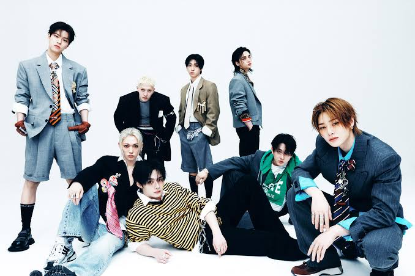
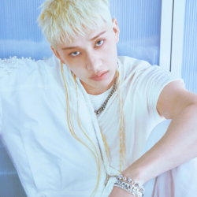
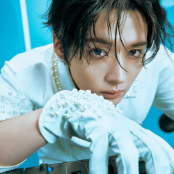
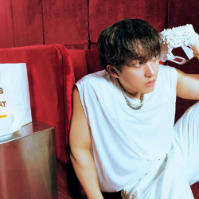
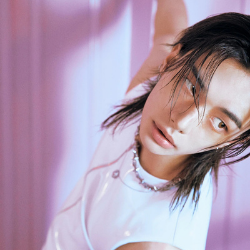
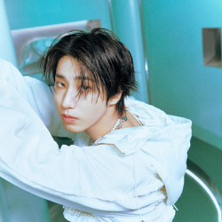
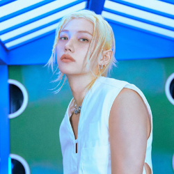
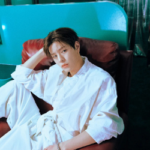
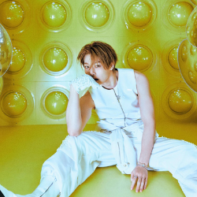

Members


Bang Chan
Leader, producer, vocalist, and rapper originally from Australia. Member of 3RACHA. He is the oldest member of Stray Kids, and currently holds the record for most songs produced by a Korean artist, at over 240 songs.

Lee Know
Dancer, vocalist, and performer known for his precise dancing and stage presence. He is the second oldest of the group, and has 3 cats named Soonie, Doongie, and Dori. He has previously performed as a backup dancer for BTS.

Changbin
Rapper, producer, and member of 3RACHA, known for his powerful rap style. He is the third oldest member of Stray Kids, and also one of the shortest male K-pop idols. He is also the member with the most outside music collaborations.

Hyunjin
Dancer, rapper, and vocalist recognized for his expressive performance style. He is the fourth oldest member of Stray Kids. He is an international brand ambassador for Versace, Guess, and Cartier.

HAN
Rapper, vocalist, songwriter, and member of 3RACHA known for his versatility, raised in Malaysia before moving back to South Korea. He is the fifth oldest member of Stray Kids. He is recognized as one of the fastest rappers within K-pop.

Felix
Rapper, dancer, and vocalist known for his deep vocal tone and energetic performances. He is the sixth oldest member of Stray Kids. He is currently the brand ambassador for 14 brands, inclusive of Louis Vuitton, Adidas, and UNICEF.

Seungmin
Vocalist recognized for his clear vocal tone and emotional delivery. He is the seventh oldest member of Stray Kids. He is the first member of the group to have solo music activities with singing openings and ending themes for various K-Dramas.

I.N
Vocalist and youngest member of Stray Kids, known for his bright vocal color. He is the eighth and youngest member of the group. He was a child model before joining the group, and would later go on to be a brand ambassador for Bottega Veneta.